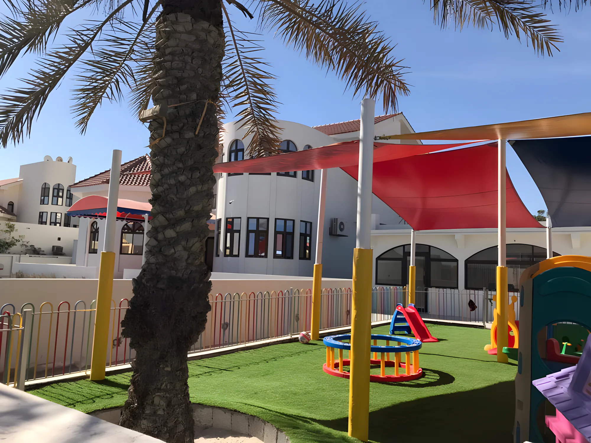

Home / Programmes
Sessions,classes andlearning

Three sessions, ten classes and one curriculum, for children from 9 months to 4 years. Here is how a place at Little Wonders works, from the first call to the first morning.
Find your child's age
Sessions
- Morning session · 8:00 – 12:00 or 12:30
Until 12:00 for infants and pre-nursery, 12:30 for nursery. The full curriculum, every morning.
- Afternoon session · 13:00 – 17:00
The same curriculum and activities as the morning, for families who need a later start than the usual preschool hours.
- Morning + Day Care · 8:00 – 15:00
The morning session, then extra meals and snacks, play time, and more time for your child to make friends and be creative.
Early drop-off is also available. Call 3644 7000 to ask
Ten classes, by age
We accept children from 9 months up to 4 years. Every class is small, led by a qualified teacher with specialist teachers and assistants, so each child gets attention of their own.
12–18 months
- Ladybirds
18–24 months
- Caterpillars
- Penguins
- Ducklings
2–3 years
- Butterflies
- Clever Cats
- Bluebirds
- Dinosaurs
3–4 years
- Giraffes
- Busy Bees

The curriculum
The British Early Years Foundation Stage (EYFS) and the Montessori approach, side by side. It values the development of the whole child, so children grow emotionally, physically, intellectually and socially. Taught in English and Arabic.
Communication and language
A rich language environment. The Montessori language materials help children speak and listen with confidence in all kinds of situations, and prepare them for writing. This may be taught in a bilingual setting.
Sensorial materials
A child's first learning comes through touch, taste, smell and hearing. The sensorial materials sharpen observation and build vocabulary.
Mathematics
Sorting, matching and counting first. The Montessori maths materials then lead step by step to numbers, simple addition and subtraction, shapes, space and measures.
Literacy
Linking sounds and letters, and beginning to read and write, with a wide range of materials.
Understanding the world
Topics based on real-life experiences, and many educational trips to explore the physical world and the community.
Physical
Dancing and drama, weekly exercise sessions, and specialists invited to lead music and drama during the year.
Expressive arts and design
Art, music, movement, dance, sports, role play, design and technology, with a wide range of media and materials.
Everyday living
The link between home and nursery: caring for the classroom, taking part in its social life, and building coordination, balance and grace.
How to register
- Call us or come and see the school
Ring 3644 7000 or 3655 4000, or email info@littlewondersbh.com with any questions.
- Fill in the expression of interest form
Admission is rolling, so you can apply at any time of year.
- We contact you
Little Wonders calls you to talk through enrolment and the registration process.
Bring these to registration
- A copy of your child's birth certificate
- A copy of your child's passport photo page and residence visa
- A copy of your child's immunisation record, in English
- One passport-size photo
- The completed registration and medical forms
- A copy of the sponsoring parent's passport and residence visa
The registration form, medical form and term dates can be downloaded here or picked up at the campus.